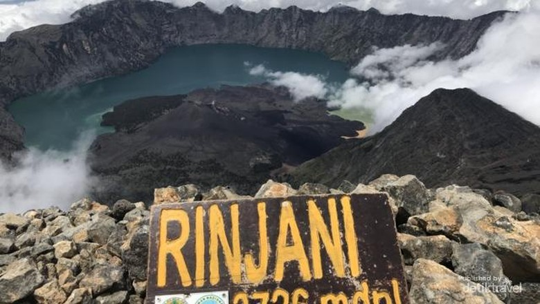
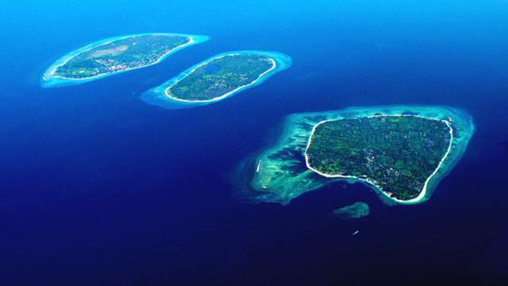

Wisata
Banyak sekali destinasi wisata yang patut dikunjungi. Mulai dari pegunungan hingga keindahan bawah laut. Bagi kalian yang menyukai aktivitas mendaki, Gunung Rinjani menjadi list pertama yang harus kalian datangi jika mengunjungi Pulau Lombok. Jika ada pegunungan, pasti terdapat air terjun. Air terjun di Pulau Lombok tidak kalah menarik untuk disambangi. Ada banyak air terjun yang akan menyegarkan pikiran Anda. Pulau Lombok juga terkenal akan pantai-pantainya yang indah. Mulai dari pantai berpasir hitam hingga pasir pantai yang menyerupai merica semuanya ada di pulau eksotis ini. Pemandangan bawah laut yang disajikan memiliki keindahan yang luar biasa
Gunung Rinjani merupakan salah satu dari jajaran gunung tertinggi di Indonesia. Memiliki ketinggian 3.726 mdpl membuat gunung ini menjadi destinasi wajib bagi wisatawan yang memiliki hobi mendaki. Dengan ketinggiannya itu, pastinya untuk mencapai puncak Gunung Rinjani tidaklah mudah. Namun, jangan khawatir.Disepanjangan perjalanan pendakian, Anda akan disuguhkan dengan pemandangan yang luar biasa. Tidak hanya sebuah pegunungan biasa, terdapat sebuah danau yang termasuk ke dalam wilayah Taman Nasional Gunung Rinjani (TNGP). Danau tersebut dinamakan Danau Segara Anak. Gili adalah sebutan untuk pulau-pulau kecil yang berada di Pulau Lombok. Banyak sekali terdapat gili di Pulau Lombok, antara lain Gili Trawangan, Gili Air, dan Gili Meno. Lokasi ketiga gili ini sangat berdekatan, tepatnya di Kabupaten Lombok Utara. Aktivitas yang bisa dilakukan ketika berlibur di ketiga gili tersebut yaitu berenang di pantai, snorkeling, freedive, diving atau hanya berjemur di pinggir pantai. Jika Anda mengunjungi gili ini, Anda tidak akan menemui kendaraan bermotor karena hal itu dilarang berada di gili ini. Namun, Anda tidak perlu khawatir, selain berjalan kaki, di Gili ini juga terdapat Cidomo dan sepeda-sepeda yang dapat disewa untuk mengelilingi gili. Cidomo adalah kendaraan tradisional yang memanfaatkan tenaga kuda untuk menggerakannya. Sama seperti delman, pada cidomo terdapat seorang kusir yang akan menjalankan cidomo. Tidak adanya kendaraan bermotor membuat lingkungan gili meminimalisir polusi udara yang ada. Jika suatu saat Anda akan mengunjunginya, tetaplah jaga kebersihan lingkungan sekitar.Gunung Rinjani

Gili Trawangan, Gili Air, Gili Meno
